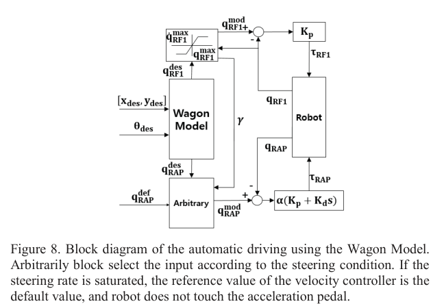
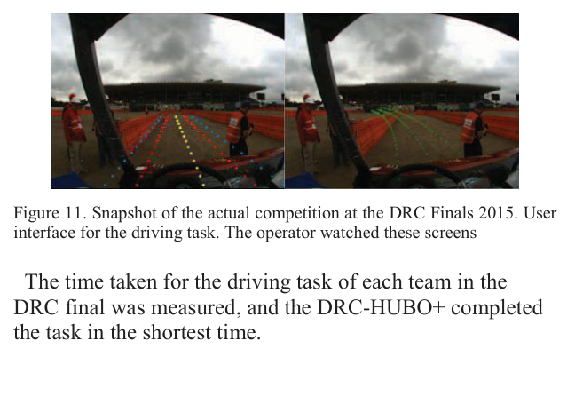

Line B
Conference
2015
Control Strategies for a Humanoid Robot to Drive and then Egress a Utility Vehicle
H. Jeong, J. Oh, M. Kim, K. Joo, I. S. Kweon, J.-H. Oh (KAIST). IEEE-RAS Humanoids, 2015. 10.1109/HUMANOIDS.2015.7363447
Fig 8 — Wagon Model 자율 주행

Wagon Model 블록도 — 한 라이다·IMU로 조향·속도를 결합 제어, 급조향 시 가속 페달에서 발을 뗀다. (클릭 시 확대)
Fig 11 — 수동 운전 UI

DRC Finals 실전 운전 UI — 조향각으로 만든 궤적을 영상에 투영(레인 투영)해 거리감을 보완. (클릭 시 확대)
TL;DRDRC Finals 2015 1위 KAIST의 DRC-HUBO+가 비개조 차량을 운전하고 직후 스스로 하차(egress)한 제어 전략. 핵심은 정교함이 아니라 최소 센서 + 단순·강건한 고전 제어.
로봇
DRC-HUBO+ (DRC Finals 2015 우승, 1.70 m, 30 DoF)
차량
Polaris Ranger XP900 (비개조)
센서
카메라 2대 + 라이다 1대 + IMU
학습 여부
없음 (고전 제어)
연구 배경
재난 지역 접근은 로봇이 걷는 것보다 차를 모는 편이 에너지·시간을 크게 아낀다 → DRC 2015 운전 과제. 그런데 자율주행차(Velodyne·GPS 다수)와 달리 DRC 로봇은 다른 조작 과제도 해야 해 센서·연산·대역폭이 빈약하고 통신 지연으로 클라우드 연산도 못 쓴다. 게다가 하차(egress)는 차체와 큰 힘 상호작용인데, 고감속·고강성 관절은 역구동성이 낮아 외력에 잘 적응하지 못한다.
무엇을 했는가
최소 센서 운전 알고리즘(Wagon Model)과 자율 오판 대비 레인 투영 텔레옵을 병행(실패가 허용 안 되는 실전용 백업). 고감속 팔 한계를 넘는 모터 제어(게인 오버라이드·비상보 스위칭·마찰 보상)와 하차용 직교 하이브리드 위치/힘 제어를 제시. 이 전략으로 DRC Finals 2015 운전+하차 과제를 완수(운전 최단)했다.
방법론 상세
- 장애물 검출(운전). 장애물을 직선으로 가정, 라이다 점에 RANSAC으로 선분을 얻고, IMU 차량 방향각과의 차이로 목표 방향·위치를 정한다.
- ★ Wagon Model 자율 조향. cross-track·비례오차 제어의 한계를 피해, '사람이 수레를 끌면 수레가 따라 방향을 잡는' 발상으로 목표에서 3차 스플라인 궤적·일정 반지름 원을 써 조향각을 산출. 급조향이 포화되면 페달에서 발을 떼게 한다. 한 라이다·IMU만으로 조향·속도를 결합 제어.
- 수동 운전(레인 투영). 조향각으로 만든 Ackerman 궤적을 영상에 겹쳐, 좁은 화각·렌즈 왜곡으로 부족한 거리감을 보완.
- 고감속 매니퓰레이터 제어. 게인 오버라이드(PD 게인을 행렬로 가변), 비상보 스위칭(제동 효과 제거로 유연성 확보), 모델 기반 마찰 보상.
- ★ 하차 하이브리드 위치/힘 제어. 손끝 위치·속도와 목표 힘으로 직교 힘을 산출, Jacobian 전치로 관절 토크화(마찰·중력 보상). 수평면은 컴플라이언스로, 위 방향은 힘으로 롤케이지를 당겨 착지 충격 완화. 옆으로 앉아(sit sideways) 운전해 하차 시 다리를 빼낼 필요를 없앴다.
결과 / 시연
DRC Final 운전 47초(IHMC 81·MIT 91 대비 전 팀 최단), 하차 약 2분 10초. 최소 센서·단순 제어로 실전 운전+하차를 완수하며 종합 1위.
한계
안정용 보조 장치(스티어링 그립·페달 와이어 링크)를 일부 장착. 정밀 주행보다 실전 완수·강건성에 초점을 둔 단순 제어이며, 고감속 관절의 낮은 역구동성을 제어로 우회한 것이지 본질적 컴플라이언스는 아니다.
본 연구와의 관계
실전 검증된 최소-센서 운전 + 하차 파이프라인. 강건성 baseline이자, egress까지 포함한 과제 범위의 참고점.